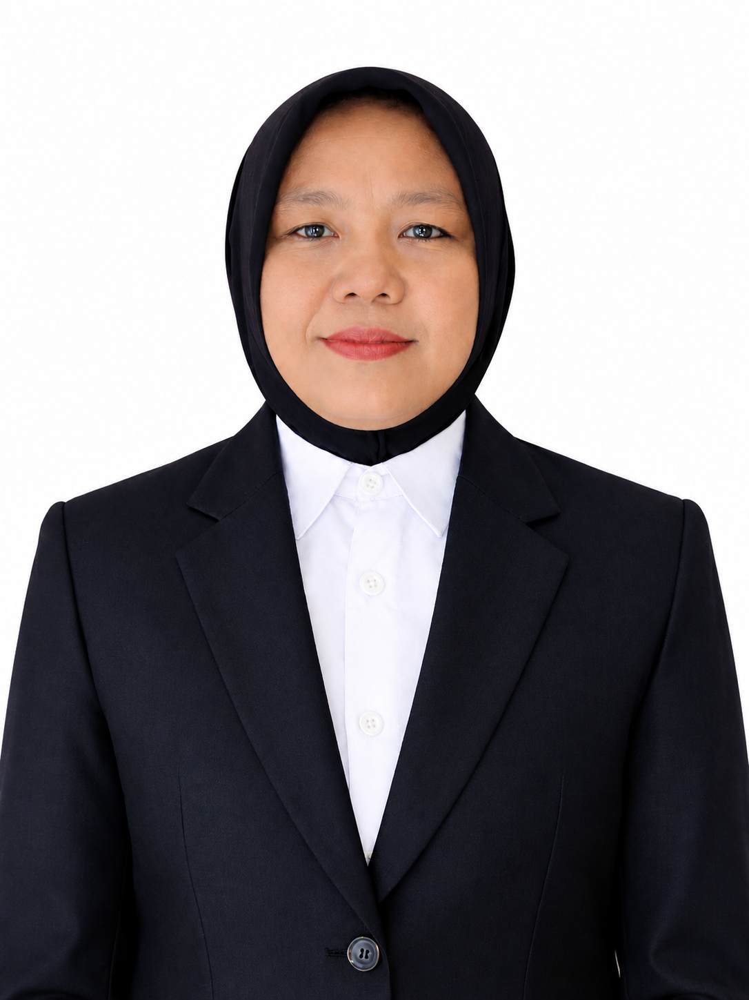

Tim Perencanaan, Data dan Informasi KPU Kabupaten Tebo yang berperan dalam mendukung pengelolaan, penyajian, dan penyampaian informasi secara terstruktur, akurat, dan informatif.
Kami adalah Tim Rendatin (Perencanaan, Data dan Informasi) KPU Kabupaten Tebo yang bertugas mengelola dan menyajikan data serta informasi pemilu dengan transparan dan akurat.
Mendukung proses perencanaan yang berkaitan dengan data, informasi, dan kebutuhan penyelenggaraan kegiatan KPU.
Mengelola dan menyajikan data agar dapat digunakan secara terstruktur, akurat, dan mudah dipahami.
Mendukung penyampaian informasi kepemiluan agar lebih mudah diakses dan dipahami oleh masyarakat.
Susunan pengarah terdiri dari Ketua, Anggota KPU Kabupaten Tebo, serta Penanggung Jawab dari Sekretariat.
Ketua KPU Kabupaten Tebo
KetuaAnggota KPU Kabupaten Tebo
AnggotaAnggota KPU Kabupaten Tebo
AnggotaAnggota KPU Kabupaten Tebo
AnggotaAnggota KPU Kabupaten Tebo
AnggotaSekretaris
SekretariatStruktur Tim Rendatin KPU Kabupaten Tebo dalam mendukung pengelolaan data dan informasi.
Kasubbag Rendatin
Kasubbag
Staff Rendatin
StaffStaff Rendatin
StaffStaff Rendatin
Staff